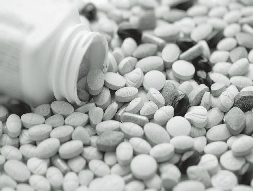

Depression
Many people with anxiety disorders also suffer from depression. Since depression makes anxiety worse (and vice versa), it’s important to have strategies to treat both conditions. In a collapse, things may be so bad that everyone is depressed to one degree or another.
This response to the strain of a survival situation is understandable, and is referred to as “situational depression”. Their circumstances are what have made them depressed, not some misfiring of neural cells in their brain as in some other cases. Some depression is cyclical, relating to, for example, a woman’s menstrual cycle or the time of the year. Like anxiety, there are a number of symptoms that are commonly seen in various combinations:
Feelings of hopelessness or inadequacy
Apathy
Change in Appetite
Weight loss or gain
Irritability (especially common in men)
Exhaustion
Reckless behavior
Difficulty concentrating on tasks
Aches and pains (without clear physical cause)
Severe cases of depression are marked by inability to get out of bed in the morning and even thoughts of suicide.
Various medications known as “antidepressants” are available on the market; these include Prozac, Zoloft, and
Paxil, among others.
Unfortunately, they will be unlikely to be in your medical supplies unless a member of your group already suffers from chronic depression. As such, you must look to alternatives.
Vitamin supplements like
B12,
Folic Acid,
Tryptophan, and Omega-3 antioxidants may be effective in some sufferers. St. John’s Wort has been used with some success, but is not to be used on pregnant women or children. As with anxiety, you, as healthcare provider, will have to depend on your counseling skills to aid your patient.
In situational depression as will be seen in a collapse situation, you would return to many of the techniques used to treat anxiety:
Assuring good nutrition
Reducing substances such as nicotine, caffeine, and alcohol
Encouraging exercise and constructive activities
Promoting rest breaks and good sleep habits
Instituting relaxation techniques (meditation, massage, deep breathing)
Additionally, it will be especially important to make sure your people cultivate supportive relationships with each other. People who are depressed often feel very alone.
You must work to foster a sense of community; this with provide strength to your emotionally weakened members.
Make sure to accentuate the positive, even in the little things. Encourage each member of your group to share their feelings with the others. Group meetings for this purpose will encourage communication and bonding in the survival group. Incorporate these meetings as a regular event in your community.
You might have read about Post-Traumatic Stress
Syndrome (PTSD). This condition affects many who are exposed to stressful events like sexual assault, combat, or natural disasters. Relapses are common and can last for years.
Oftentimes, the patient will re-experience traumatic events mentally; they may become agitated and, sometimes, uncontrollable. Anger, insomnia, decreased work performance, and apathy are common manifestations. Although anxiety is a component of
PTSD, anti-anxiety medications do not seem to help as much as antidepressants. Follow the treatment guidelines previously discussed for depression.
The success of your survival group will depend greatly on your ability to spot emotional issues before the situation deteriorates. Once out of control, these conditions will damage the cohesion necessary to succeed in an adverse environment. Close observation and quick intervention are skills as important to develop as any specific technical skill in a collapse.
As a practicing obstetrician in the early part of my medical career, I can tell you that delivering babies at 4 a.m. is not conducive to a good sleep pattern. Lack of sleep is called “sleep deprivation”, and can be an acute or chronic condition. In a survival situation, you can imagine the many reasons why you might suffer from not enough sleep: Unfamiliar environments, increased responsibilities, fatigue from strenuous activities, and just plain old stress will combine to greatly increase the incidence of this medical issue.
Sleep deprivation can significantly impair your brain’s function. There are significant negative effects on alertness and performance which are likely due to a decrease in activity in certain areas of the brain involved in higher thought processes. As a result, you may become incapable of putting events into the proper perspective and taking appropriate action.
This makes you a poor addition to a survival group.
It stands to reason that many car crashes and industrial accidents are, at least in part, caused by lack of sleep.
Indeed, the
National
Highway
Traffic
Safety
Administration confirms that over 100,000 serious traffic accidents a year are caused by sleeping at the wheel. The British Medical Journal equates 17-21 hours without sleep as the equivalent of a blood alcohol level of
.05 –.08%.
When you don’t get enough sleep, healing is delayed and the increased amount of muscle activity (from not resting) leads to the equivalent of physical overexertion.
In a 2004 study that evaluated the performance of medical residents, those getting less than 4 hours of sleep made twice the medical errors that residents who slept 7-8 hours a night. As I can tell you from personal experience, very few residents have the luxury of 7-8 hours of sleep on a regular basis. This is especially dangerous: Chronically sleep-deprived individuals often don’t realize that they are functioning at an impaired level.
In addition to what’s happening in your brain, the failure to get 7-8 hours of sleep every night causes many of the following signs and symptoms:
Irritability
Depression
Tremors
Bloodshot, puffy eyes
Headaches
Confusion
Memory loss
Muscle aches
Hallucinations and other psychotic symptoms
Ill effects on control of diabetes and high blood pressure
Blackouts (also called “microsleeps”)
Weight loss or gain
Actual brain damage has been documented in a number of studies, the most prominent being the one performed by the University of California in 2002. Using animal subjects, it showed that non-rapid eye movement sleep
(deep sleep) is necessary for turning off brain chemicals called “neurotransmitters” and allowing their receptors to replenish.
The lack of deep sleep impairs mood and decreases learning ability. Deep sleep is also important to allow natural enzymes to repair damage caused by “free radicals”, molecules responsible for aging and tissue damage. The study also found that lack of rapid eye movement sleep (dreaming) worsens depression.
Depressed patients have depleted amounts of neurotransmitters in the brain, and sleep deprivation worsens this condition.
The treatment of sleep deprivation depends on the cause. The best start is to consider a concept we’ll call
“sleep hygiene”. Sleep hygiene is adjusting your behavior to maximize the amount of restful sleep you get.
Consider:
Adhering to a standard bedtime (and wakeup time)
Making your environment as comfortable as possible
Avoiding Nicotine, Caffeine, and Alcohol before going to bed.
Exercising regularly, but not before going to bed
Eliminating as much light as possible in the room at bedtime
Staying away from heavy foods for at least 2 hours before going to sleep
Keeping your mind clear of stressful issues at bedtime
As you can imagine, some of this may be difficult in collapse scenarios, so do your best now to improve your sleep hygiene beforehand. Of course, there are many sleep aids, prescription and over-the-counter that might help. Prescription sleep aids include:
triazolam (Halcion)
lorazepam (Ativan)
temazepam (Restoril)
zolpidem (Ambien zaleplon (Sonata)
eszopiclone (Lunesta)
In addition, many antidepressants and pain meds have sedative effects. All of the aforementioned medications should be used, if at all, with the utmost caution, due to the potential for addiction and abuse (some more than others).
Sleeping pills should never be used by those with airway obstruction issues like sleep apnea. It may prevent them from waking up to breathe. “CPAP”
equipment, which keep the airway open by air pressure, are more appropriate in these patients, but will likely be difficult to use in an austere environment.
Over the counter sleep aids include the old standby
Diphenhydramine, found in medications like Benadryl and Sominex. Usually, this medicine is used for allergic reactions; the 50 mg. dose is more effective in inducing sleep, but sometimes leads to drowsiness the next day and other side effects. Another antihistamine with sedative effects is Doxylamine, also known as Unisom.
Other products like Melatonin may be helpful, but work best in those with documented low levels of the chemical naturally. Be aware that many drugs taken by adults will have the opposite effect on children. Instead of becoming sleepy, they may become agitated.
A better alternative to start with would be some form of natural sleep aid. Some of the common alternative remedies for sleeplessness include the following, usually made into teas:
Chamomile
Kava Root
Lavender
Valerian Root
Catnip
Good nutrition is important for general health, but some foods are also thought to be helpful in promoting a good night’s sleep. They contain sleep-inducing or musclerelaxing substances like melatonin, magnesium, or tryptophan:
Oatmeal – melatonin
Milk – tryptophan
Almonds – tryptophan and magnesium
Bananas – melatonin and magnesium
Whole wheat Bread – helps release tryptophan
Yoga, massage, meditation, sound machines, and even acupuncture are also alternative methods of dealing with sleep deprivation. Consider making some lifestyle changes now, so that you will be rested and prepared for whatever these uncertain times send your way.


Over the counter (OTC) medications deal with a wide variety of problems; indeed, many of them were once only available by prescription. These drugs are widely available, and easy to accumulate in quantity. As such, they are ideal for the survival medic’s cache of medical supplies.
The Physician’s Desk Reference puts out a guide to
OTC medications with descriptions, images, risks, benefits, dosages, and side effects. Consider this book for your survival medical library; it is widely available.
Given the complexity of manufacturing pharmaceuticals, most OTC drugs will be nearly impossible to produce after a collapse. Even aspirin, the oldest manufactured drug, won’t be available (at least not in a form you’d recognize).
Let’s put together a list of what you absolutely must have in quantity as part of your medical supplies. The medications will be listed by their generic names, with
U.S. brand names in parenthesis where applicable. Adult doses are also listed. In no particular order, they are:
Ibuprofen 200mg (Motrin, Advil):
A popular pain reliever, anti-inflammatory, and fever reducer. This medication is useful for many different problems, which makes it especially useful as a stockpile item. It can alleviate pain from strains, sprains, arthritis, and traumatic injury. As well, it can help reduce inflammation in the injured area. Ibuprofen is also useful in reducing fevers from infections. The downside to
Ibuprofen is that it can cause stomach upset.
Ibuprofen can be used 1 or 2 every 4 hours, 3 every 6 hours, or 4 every 8 hours.
Acetaminophen 325mg (Tylenol):
Another popular pain reliever and fever reducer, it can be used for all of the problems that you can take Ibuprofen for, with the added benefit of not causing stomach irritation or thinning the blood.
Unfortunately, it has no significant antiinflammatory effect. This drug is excellent for treatment of pain and fevers in children at lower doses. Tylenol comes in regular and extra strength (650mg); adults take 1-2 every 4 hours.
An Aside: Patients with heat stroke receive little benefit from efforts to reduce their body core temperature with Ibuprofen or Acetaminophen;
these drugs work best when the fever is caused by an infection, and don’t work as well when infection is not involved.
Aspirin, 325mg: If you have Ibuprofen and
Acetaminophen in your medical storage, why consider Aspirin? Aspirin has been around since the late 19th century as a pain-reliever, fever reducer, and anti-inflammatory, but it has blood thinning properties as well. It may be all we have to help those with medical issues that require the use of anti-coagulants. It is also useful to treat older folks with coronary artery disease. If you suspect someone of having a heart attack, have them chew an adult aspirin immediately. 1 baby aspirin (81mg) daily may help prevent coronary artery disease.
The ingredient in Aspirin can also be obtained by chewing on a cut strip of the under bark of a willow, aspen or poplar tree. Take 2 adult aspirin every 4 hours for pain, fever, and inflammation.
In a collapse situation, higher doses may be appropriate to replace drugs like Coumadin, but have not been fully researched. Watch for stomach upset.
Loperamide, 2mg (Imodium): There’s a high likelihood of food and water contamination issues in a collapse situation, so this medication is essential as an anti-diarrheal. By slowing intestinal motility, less water loss will occur from the body.
This decreases the chance of developing dehydration, a known killer in austere settings.
With diarrheal disease, you often have nausea and vomiting, so you will also want to have:
Meclizine 12.5, 25, 50mg (Antivert): Mecilizine is a medication that helps prevent nausea and vomiting. Often used to prevent motion sickness,
Meclizine also helps with dizziness, and tends to act as a sedative as well. As such, it may have uses as a sleep aid or anti-anxiety medication.
Take 1 25mg tablet 1 hour before boarding or 50100mg daily in divided doses for dizziness, anxiety or sleep.
Triple Antibiotic Ointment (Neosporin, Bacitracin,
Bactroban): In situations where we are left to fend for ourselves, we’ll be chopping wood and performing all sorts of tasks that will expose us to risk of injury. When those injuries break the skin, it puts us in danger of infections which could lead to a life threatening condition. Triple antibiotic ointment is applied at the site of injury to prevent this from happening. It should be noted that triple antibiotic ointment won’t cure a deep infection; you would need oral or IV antibiotics for that, but using the ointment immediately after an injury will give you a good chance at preventing it. Apply 3-4 times a day.
Diphenhydramine 25mg, 50mg (Benadryl): An antihistamine that alleviates the itching, rashes, nasal congestion and other symptoms of allergic reactions. It also helps drain the nasal passages in some respiratory infections. At the higher 50 mg dose, it makes an effective sleep aid. Use 25mg every 6 hours for mild reactions, 50mg every 6 hours for severe reactions, anxiety or sleep.
Diphenhydramine also comes in an ointment for skin eruptions.
Hydrocortisone cream (1%): Highly useful for rashes, this cream is used for various types of dermatitis that causes redness, flakiness, itching, and thickening of the skin. It’s a mild steroid which reduces inflammation and, as such, the various symptoms of allergic dermatitis, eczema, diaper rash, etc. Apply 3-4 times a day to affected area.
Omeprazole 20-40mg, Cimetidine 200-800mg,
Ranitidine 75-150mg (Prilosec, Tagamet, Zantac, respectively): In a situation where we may be eating things we’re not accustomed to, we may have issues with stomach acid. The above antacids will calm heartburn, queasiness, and stomach upset. Calcium Carbonate (Tums) or
Magnesium sulfate (Maalox) is also fine in solid form. These medications are also useful for acid reflux and ulcer disease.
Clotrimazole, Miconazole cream/powder
(Lotrimin, Monistat vaginal cream): Infections can be bacterial, but they can also be caused by fungus. Common examples of this would be
Athlete’s foot, vaginal yeast infections, ringworm, and jock itch. These conditions, which will be just as common in times of trouble as they are now, if not more. Apply clorimazole twice a day externally or miconazole once daily intravaginally. Some vaginal creams come in different strengths. In some, the whole treatment course is over in one day; in others, 3 days or a week.
Multivitamins: In a societal collapse, the unavailability of a good variety of food may lead to dietary deficiencies, not just in calories but in vitamins and minerals. Vitamin C deficiency, for example, leads to Scurvy. To prevent these issues, you should have plenty of multivitamins, commercial or natural, in your medical storage.
You won’t necessarily have to take these on a daily basis; many multivitamins give you MORE than you need if taken daily. In most cases, you’ll just excrete what your body can’t absorb. In a collapse, once a week would be sufficient to prevent most problems.
The good news is that you can probably obtain a significant amount of all of the above drugs for a reasonable amount of money. To retain full potency, these medications should be obtained in pill or capsule form; avoid the liquid versions of any of these medicines if at all possible.
When storing, remember that medications should be stored in cool, dry, dark places. A medicine stored at 90 degrees will lose potency much faster than one stored at
50 degrees.
Over the counter drugs are just another tool in the medical woodshed; accumulate them as well as prescription drugs such as antibiotics. Essential oils, herbal supplements, and medical equipment are also important. With a good stockpile, you’ll have everything you need to keep it together, even if everything else falls apart.
Being an old and cranky individual (some find it charming, I like to think), I frequently complain about my various aches and pains. It stands to reason that minor issues with discomfort now will be multiplied by the increased workload demands of a power-down situation. To get a feel for what I am talking about, try lugging a full 5 gallon bucket of water from your local natural water source to your home a few times.
Sprains, strains, and worse will be part and parcel of any long-term survival situation. Therefore, any person who hasn’t considered providing for pain issues in times of trouble is not medically prepared. It’s a good idea to have a working knowledge of the actions and uses of various pain medications.
Pain is extremely variable; it can be sharp, dull, throbbing or numbing. It can be major or minor, and might or might not be a sign of something serious. It can be made better or worsened by various factors; as such, the exact same injury in two different individuals may elicit different levels of pain.
If we characterize pain by the kind of damage that it is caused by, we can group it into two or perhaps three categories. Pain is most commonly caused by tissue damage (“nociceptive” pain). The damage may be due to trauma or may be due to disease, such as tissue destruction from cancer. Even certain medical treatments such as radiation may cause tissue damage that could lead to pain. This type of pain is often described as “sharp”, “stabbing”, “achy”, or worsens with movement (“it only hurts when I laugh”).
Another category is pain caused by nerve damage
(“neuropathic” pain). Nerves transmit pain signals from the damaged area to the brain. If the nerve is damaged, the sensation you feel may be very different from what you would expect. This is called a “paresthesia”. You might feel burning where there is no reason, for example. You might even feel pain in a limb that is no longer there, due to amputation.
This type of pain is more likely to be chronic than pain from tissue damage. Besides burning, this type of pain can be described as prickling, “pins and needles”, or similar to an electric shock.
The third type of pain is “psychogenic”, or “all in the mind”. Although fear, depression, anxiety and other emotions may play a part in someone’s pain, there is most often some physical origin. Never dismiss a group member ’s complaints of pain without fully evaluating them by physical exam.
Pain medications are used to, well, relieve pain. Pain relief is referred to as “analgesia”. As pain is variable, there are many different types of drugs available that have different mechanisms of action:
Non-steroidal anti-inflammatories: Also known as
NSAIDS, these drugs act to decrease inflammation and fever as well as pain. The most popular NSAIDs are
Ibuprofen and Aspirin; Naproxen is another other
NSAID available without a prescription. For quick relief from pain, the shorter acting Ibuprofen or Aspirin is superior to Naproxen. Naproxen may not have an effect until you have taken a couple of doses, but works well for long-term relief.
These drugs are especially useful in injuries associated with swelling or other signs of inflammation.
There are various prescription versions of NSAIDS on the market, such as Meclomen, Ponstel, Toradol, and many other U.S. brands. Are they better than the nonprescription versions? Despite pharmaceutical company claims to the contrary, there is no proven evidence that these expensive medications are much more effective.
Your experience may vary. Longterm use of NSAIDS is associated with bleeding and other symptoms related to the gastrointestinal tract.
Acetaminophen: This drug relieves pain by changing the body’s sensitivity to things that cause pain (its “pain threshold”), and also lowers fever. This drug is often as effective as NSAIDs for pain and has fewer side effects
(unless you have liver disease). Acetaminophen has no anti-inflammatory action, however; therefore, it may be less effective than NSAIDs for some conditions.
Steroids: Corticosteroids exert their effect upon pain by a very strong anti-inflammatory action. The most common steroids used for inflammation are Prednisone and Cortisone. They can be taken orally or are sometimes injected directly into damaged and inflamed joints. Longterm use of steroids is associated with a whole gamut of side effects and must be used with the utmost caution.
Muscle Relaxants: Drugs that relax tense and damaged muscles and also have a sedative effect. A common one is cyclobenzaprine (Flexeril). These are especially helpful for back strains or other injuries that cause muscle spasms.
Opioids: Narcotics are used for pain in severe cases, and act by modifying pain signal transmission in the brain. If you have had surgery, you likely have been given these medications for pain relief during recovery.
Opioids and other drugs are classified in “schedules”
by the U.S. government. The lower the number, the more restricted the substance. These categories relate to the tendency to cause addiction, be unsafe, or have no legal medical use. Besides the risk of addiction, narcotics have a strong sedative as well as analgesic effect, and must be used with extreme caution during manual work or driving a vehicle.
The categories are as follows:
SCHEDULE 1 (CLASS I) DRUGS are illegal to possess because they have no accepted medical use, high abuse potential, and clearly unsafe. Heroin is a good example.
SCHEDULE 2 DRUGS (CLASS 2) DRUGS have a high potential for abuse and dependence but have an accepted medical use, although the addictive potential is high. These drugs include opioids and barbiturates.
Meperidine hydrochloride (Demerol) falls into this category.
SCHEDULE 3 (CLASS 3) DRUGS have a lower potential for abuse than drugs in the first two categories, accepted medical uses, and mild to moderate possible addiction.
These drugs include many steroid, hydrocodone, and codeine-based drugs.
Vicodin
(hydrocodone and acetaminophen) qualifies to be included here.
SCHEDULE 4 (CLASS 4) DRUGS have a lower abuse potential than Schedule 3 Drugs, accepted medical uses, and less potential for addiction. These include many sedatives and anti-anxiety agents such as
Diazepam (Valium) and Alprazolam (Xanax).
SCHEDULE 5 (CLASS 5) DRUGS have a low abuse potential, accepted medical use, and little potential for addiction. These consist primarily of preparations containing limited quantities of narcotics or stimulant drugs for cough, diarrhea, or pain.
Lomotil
(diphenoxylate/atropine), an anti-diarrheal, is a classic example.
Anti-anxiety and anti-depressant agents: Drugs such as Xanax or Prozac may have an effect on pain by relieving “psychogenic” factors such as anxiety or depression; this allows the patient to better deal with their pain issues. They work by adjusting level of certain chemicals in the brain tissue.
Anti-Seizure
Medication:
Some anti-convulsant drugs, such as Tegretol, used for epilepsy are useful to calm damaged nerves, and are possible options for
“neuropathic” pain described earlier.
Combination Drugs: Some pain medications are combinations of different drugs. Percocet, for example, is Acetaminophen and Oxycodone (an opioid). Some are used alternatively during the day; An NSAID may be prescribed between doses of an opioid.
Most of these drugs are by prescription only, and it will be unlikely that you’ll be able to stockpile large quantities of any but the non-prescription versions. As such, it will be important to know about all the natural alternatives you have for pain relief
In a long-term survival situation, your limited supplies of the above medicines will eventually run out. This leaves you with natural alternatives from products that you can grow yourself or, perhaps, find in your environment.
Although it’s true that you can’t be certain of the exact amount of pain relief you will experience, you also are less likely to have major side effects, as well. Let’s discuss some of these alternatives:
Capsaicin: This is an ingredient in chili peppers and decreases pain sensation by deactivating nerve receptors on the skin. This is especially helpful for headache, muscle ache, and arthritis sufferers and those with neuropathic pain. The most pain relief occurs after using a capsaicin ointment for a month or so. Commercial
Capsaicin can be found easily on the internet.
Salicin: Salicin is the original ingredient in the first pharmaceutical, Aspirin, and has been manufactured since the 19th century. Found in the bark of Willow,
Aspen, and Poplar trees, Salicin can give pain relief by chewing on strips of under bark (not outer bark) and making a tea. Like Aspirin, Salicin will help reduce fever, as well.
Arnica: A natural anti-inflammatory, this substance reduces swelling and, therefore, discomfort from injuries to joints and muscles.
Methylsulfonyl-methane (MSM): Derived from sulfur, this substance helps slow down degeneration from joint disease, especially when combined with
Glucosamine and Chondroitin. Over the course of time, osteoarthritis sufferers often report significant pain relief. It works by decreasing transmission of pain nerve impulses, and is very popular in Europe.
Curcumin: The herb Turmeric contains this substance, which increases the body’s defense against inflammation, thereby decreasing pain.
Fish Oil: Filled with omega-3 fatty acids, fish oil reduces inflammation by releasing chemicals called prostaglandins when digested. It also blocks the production of inflammatory chemicals in the body.
Commonly recommended in those with coronary artery disease, larger doses (2000-4000mg/day) are shown in several studies to give significant pain relief from various joint and immune disorders. Be aware that high doses of fish oil can thin the blood.
Ginger Root: A tea made of ginger root is thought to decrease inflammation and provide pain relief.
Boswellia: This herb from India produces certain acidic compounds that are touted as useful for chronic pain, and is said to decrease inflammation. Used long term, Boswellia is thought to provide as much pain relief as many NSAIDS.
Quercitin: Flavinoid compounds found in various plants, such as onions, may decrease inflammation.
Quercitin can also be found in red wine. Some researchers believe that vegetarian diets limit the amount of pain experienced by those who adhere to them.
S-adenosylmethionine (Sam-e): An amino acid, Same seems to reduce inflammation and increase neurotransmitters in the brain that increase the sensation of well-being. Taking this supplement long-term seems to give the best likelihood of obtaining pain relief.
Olive Oil: A compound in olive oil known as
Oleocanthal works in the same way as many NSAIDS to relief discomfort. Use the “extra virgin” variety.
Hops: Isooxygene, an ingredient found in hops, has anti-inflammatory effects;
some studies find it comparable to Ibuprofen. Hops may cause a worsening of depressive symptoms in some patients.
Cherries: If eaten when slightly unripe, cherries have antioxidant properties. An ingredient known as
Anthocyanin is thought to exert an anti-inflammatory response and may be helpful for various joint diseases.
Many of the above substances are available in supplements that you can find online, many times in combination with each other. The results with regards to pain relief will be variable from patient to patient.
What if your patient is in more than slight pain? For major discomfort, here are some well-known (and usually, illegal) substances:
Opium: Derived from the seed pods of poppies, this highly addictive compound exerts significant painkilling effects. This plant is the source of popular heavy pain medicines such as morphine and codeine. Heroin is another very potent product of the poppy plant.
Cocaine: A well-known derivative of the coca plant from South America, cocaine has natural anesthetic properties and was a popular painkiller for dental procedures not so very long ago. Some local anesthetics like Novocain and Procaine imitate the effect if cocaine.
Growing this is also very, very, illegal.
Curare: Another South American plant, the Pareira vine, contains the compound Curare, which was used by natives on their arrow and spear points to paralyze their prey. This drug is still used today by anesthesiologists to paralyze respiratory action so that they can more easily perform intubations for surgery. Without medications to reverse the effect, the paralysis effect leads to death.
Besides all of the above, consider alternative methods such as aromatherapy, massage, inhalation therapy,
Yoga, and Acupuncture. These options have been used for treatment of pain and many people have reported significant relief.
Be open to every strategy available to deal with a medical issue; there are a lot of tools in the medical woodshed, and you should take advantage of any method to keep your family healthy in uncertain times.

Accumulating medications for a possible collapse may be simple when it comes to getting Ibuprofen and other non-prescription drugs. It will be a major issue, however, for those who need to stockpile prescription medicines; most people don’t have a relationship with a physician who can or will accommodate their requests.
Antibiotics are one example of medications that will be very useful in a collapse situation. Obtaining these drugs in quantity will be difficult, to say the least.
The inability to store antibiotic supplies is going to cost some poorly prepared individuals their lives in a collapse situation. There will be a much larger incidence of infection when people have to fend for themselves and are injured as a result. Any strenuous activities performed in a power-down situation, especially ones that most of us aren’t accustomed to, will cause various cuts and scratches. These wounds will very likely be dirty. Within a relatively short time, they can begin to show infection, in the form of redness, heat, and swelling.
Treatment of such infections at an early stage improves the chance that they will heal quickly and completely. However, many rugged individualists are most likely to “tough it out” until their condition worsens and the infection spreads to their blood. This causes a condition known as sepsis; the patient develops a fever as well as other problems that could eventually be lifethreatening. The availability of antibiotics would allow the possibility of dealing with the issue safely and effectively.
The following advice is contrary to standard medical practice, and is a strategy that is appropriate only in the event of societal collapse. If there are modern medical resources available to you, seek them out.
Antibiotic Options
Small amounts of medications can be obtained by anyone willing to tell their doctor that they are going out of the country and would like to avoid “Travelers’
Diarrhea”. If you choose this route, ask them for
Tamiflu for viral illness before every flu season, and
Amoxicillin,
Doxycycline and
Metronidazole for bacterial/protozoal disease.
This approach is fine for one or two courses of therapy, but a long term alternative is required for the survival caregiver to have enough antibiotics to protect a family or survival group. Thinking long and hard for a solution has led me to what I believe is a viable option:
Aquarium antibiotics.
For many years, my hobby was tropical fish. I also have kept parrots for many years. Currently, we are growing tilapia as a food fish in an aquaculture pond.
After years of using aquatic medicines on fish and avian medicines on birds, we decided to evaluate these drugs for their potential use in collapse situations. They seemed to be good candidates: All were widely available, available in different varieties, and didn’t require a medical license to obtain them.
A close inspection of the bottles revealed that the only ingredient was the drug itself, identical to those obtained by prescription at the local pharmacy. If the bottle says FISH-MOX, for example, the sole ingredient is Amoxicillin, which is an antibiotic commonly used in humans. There are no additional chemicals to makes your scales shiny or your fins longer.
I understand that you might be skeptical about considering the use of aquarium antibiotics for humans in a collapse. Those things are for fish, aren’t they? Yet, a number of them seem to come in dosages that correspond to pediatric or adult human dosages. Indeed, some ONLY come in human dosages.
Why should this be? Why should a 1 inch long guppy require the same dosage of, say, Amoxicillin
(aquatic version: FISH-MOX FORTE) as a 180 pound adult human? I was told that it was due to the dilution of the drug in water. However, at the time of this writing, there are few instructions that tell you how much to put in a ½ gallon fishbowl as opposed to a 200 gallon aquarium.
Finally, my “acid test” was to look at the pills or capsules themselves. The aquatic or avian drug had to be identical to that found in bottles of the corresponding human medicine. For example, when I opened a bottle of
FISH-MOX FORTE and a bottle of Human Amoxicillin
500mg, I found:
Human Amoxicillin 500mg: Red and Pink
Capsule, with the letters and numbers WC 731 on it
FISH-MOX FORTE: Red and Pink Capsule with the letters and numbers WC 731 on it.
Logically, then, it makes sense to believe that they are manufactured in the same way that human antibiotics are. Further, it is my opinion that they are probably from the same batches; some go to human pharmacies and some go to veterinary pharmacies.
This is not to imply that all antibiotic medications meet my criteria. Many cat, dog, and livestock antibiotics contain additives that might even cause ill effects on a human being. Look only for those veterinary drugs that have the antibiotic as the SOLE ingredient.
Here is a list of the products that meet my criteria and that I believe will be beneficial to have as supplies and are discussed in the next section:
FISH-MOX (Amoxicillin 250mg)
FISH_MOX FORTE (Amoxicillin 500mg)
FISH-CILLIN (Ampicillin 250mg)
FISH-FLEX (Keflex 250mg)
FISH-FLEX FORTE (Keflex 500mg)
FISH-ZOLE (Metronidazole 250mg)
FISH-PEN (Penicillin 250mg)
FISH-PEN FORTE (Penicillin 500mg)
FISH-CYCLINE (Tetracycline 250mg)
FISH-FLOX (Ciprofloxacin 250mg)
FISH-CIN (Clindamycin 150mg)
BIRD BIOTIC (Doxycycline 100mg) - used in birds but the antibiotic is, again, the sole ingredient
BIRD SULFA (Sulfamethoxazole
400mg/Trimethoprin 80mg) also used in birds
These medications are available without a prescription from veterinary supply stores and online sites everywhere. They come in lots of 30 to100 tablets for less than the same prescription medication at the local pharmacy. If you so desired, it appears that you could get as much as you need to stockpile for a collapse.
These quantities would be close to impossible to obtain even from the most sympathetic physician.
Of course, anyone could be allergic to one or another of these antibiotics, but it would be a very rare individual who would be allergic to all of them. There is a 10% chance for cross-reactivity between Penicillin drugs and Keflex (if you are allergic to penicillin, you could also be allergic to Keflex). For penicillin-allergic people, there are suitable safe alternatives. Any of the antibiotics below should not cause a reaction in a patient allergic to Penicillin-family drugs:
Doxycycline
Metronidazole
Tetracycline
Ciprofloxacin
Clindamycin
Sulfa Drugs
This one additional fact: I have personally used some
(not all) of these antibiotics on my own person without any ill effects. Whenever I have used them, they have been undistinguishable from human antibiotics in their effects.
Having said this, I do NOT recommend selftreatment in any circumstance that does not involve the complete long-term loss of access to modern medical care. This is a strategy to save lives in a post-calamity scenario only.
Finding Out More
Antibiotics are used at specific doses for specific illnesses; the exact dosage of each and every medication in existence is beyond the scope of this handbook. It’s important, however, to have as much information as possible on medications that you plan to store, so consider purchasing a hard copy of the latest
Physician’s Desk Reference. This book comes out yearly and has just about every bit of information that exists on a particular drug. Online sources such as drugs.com or rxlist.com are also useful, but you are going to want a hard copy for your library. You never know when we might not have a functioning internet.
The Desk Reference has versions that list medications that require prescriptions as well as those that do not. Under each medicine, you will find the
“indications”, which are the medical conditions that the drug is used for. Also listed will be the dosages, risks, side effects, and even how the medicine works in the body. It’s okay to get last year ’s book; the information doesn’t change a great deal from one year to the next.
Antibiotic Overuse
It’s important to understand that you will not want to indiscriminately use antibiotics for every minor ailment that comes along. In a collapse, the medic is also a quartermaster of sorts; you will want to wisely dispense that limited and, yes, precious supply of life-saving drugs. You must walk a fine line between observant patient management (doing nothing) and aggressive management (doing everything).
Liberal use of antibiotics is a poor strategy for a few reasons:
Overuse can foster the spread of resistant bacteria, as you’ll remember from the salmonella outbreak in turkeys in 2011.
Millions of pounds of turkey meat were discarded after 100 people were sent to the hospital with severe diarrheal disease.
Potential allergic reactions may occur that could lead to anaphylactic shock (see the section on this topic earlier in this book).
Making a diagnosis may be more difficult. If you give antibiotics BEFORE you’re sure what medical problem you’re actually dealing with, you might “mask” the condition. In other words, symptoms could be temporarily improved that would have helped you know what disease your patient has. This could cost you valuable time in determining the correct treatment.
You can see that judicious use of antibiotics, under your close supervision, is necessary to fully utilize their benefits. Discourage your group members from using these drugs without first consulting you.
Other Medicines
For medications that treat non-infectious illness, such as cholesterol or blood pressure drugs, you will also need a prescription. These medications are not available in aquarium supply houses, so how can you work to stockpile them?
You may consider asking your physician to prescribe a higher dose than the amount you usually take. Many drugs come in different dosages. If your medicine is a
20 milligram dosage, for example, you might ask your doctor to prescribe the 40 mg dosage. You would then cut the medication in half; take your normal dosage and store the other half of the pill. It’s very important to assure your physician that you will continue to follow their medical advice and not take more medicine than is appropriate for your condition. Your success in having your request granted will depend on the doctor.
Others have managed to obtain needed prescriptions by indicating that they are traveling for long periods of time out of the country or telling their physician some other falsehood. I can’t recommend this method, because I believe that dishonesty breaks the bond of trust between doctor and patient.
Consider having a serious discussion with your healthcare provider. Describe your concerns about not having needed medications in a disaster situation. You don’t have to describe the disaster as a complete societal collapse; any catastrophe could leave you without access to your doctor for an extended period.
Alternative therapies such as herbal supplements and essential oils should be stockpiled as well. Honey, onion, silver, and garlic have known antibacterial actions; be sure to integrate all medical options, traditional and alternative, and use every tool at your disposal to keep your community healthy. If you don’t, you’re fighting with one hand tied behind your back.
remember that traditional medicines and even essential oils will eventually run out in a long term collapse. Begin your medicinal garden now and get experience with the use of these beneficial plants. There is a learning curve, and you don’t want to go through it in tough times.
I would like to take a second to voice my concern over the apparently indiscriminate use of antibiotics in livestock management (what I call Agri-Business) today.
80% of the antibiotics manufactured today are going to livestock, such as cattle and chickens. Excessive antibiotic use is causing the development of resistant strains of bacteria such as Salmonella, which can cause a type of diarrheal disease in humans. Recently, 36 million pounds of turkey meat were destroyed due to an antibiotic resistant strain of the bacteria. Over 100 people wound up in the hospital as a result of eating contaminated food.
Consider patronizing those farmers who raise antibiotic-free livestock; this will decrease the further development of resistant bacteria, and thus the antibiotics you’ve stockpiled will be more effective.
If we ever find ourselves without modern medical care, we will have to improvise medical strategies that we perhaps might be reluctant to consider today.
Without hospitals, it will be up to the medic to nip infections in the bud. That responsibility will be difficult to carry out without the weapons to fight disease.
Accumulate equipment and medications and never ignore avenues that may help you gain access to them.
There are many antibiotics, but what antibiotics accessible to the average person would be good additions to your medical storage? When do you use a particular drug? In this section, we’ll discuss antibiotics
(all available in veterinary form without a prescription)
that you will want in your medical arsenal:
250mg/500mg (FISH-MOX,
•
FISH-MOX FORTE)
Amoxicillin
250mg/500mg (FISH-FLOX,
•
FISH-FLOX FORTE)
250mg/500mg (FISH-FLEX,
•
FISH-FLEX FORTE)
Cephalexin
250mg (FISH-ZOLE) 100mg
(BIRD-BIOTIC) 250mg/500mg
•
(FISH-CILLIN, FISH-CILLIN FORTE)
400mg/Trimethoprim 80mg
•
(BIRD-SULFA)
•
150mg (FISH-CIN) 250mg
Azithromycin
•
(Aquatic Azithromycin)
There are various others that you can choose, but these selections will give you the opportunity to treat many illnesses and have enough variety so that even those with
Penicillin allergies will have options.
Other than allergies, there are other times when a particular antibiotic (or other drug) should not be used.
Many medications, for example, are not recommended for use during pregnancy. Sometimes, this is because lab studies have shown birth defects in animal fetuses exposed to the drug. Other times, it is because no studies on pregnant women or animals have yet been performed.
There are additional circumstances where a particular medication should not be used. There may be warnings about mixing one drug with another because there may be a dangerous interaction between them. For example, taking the antibiotic Metronidazole (Fish-Zole)
and drinking alcohol will make you vomit. Some drug interactions may cause the effect of one of them to become stronger or weaker. A certain medicine, for example, may decrease the effect of another when taken together. As well, you may wish to avoid some drugs due to their side effects.
You cannot be expected to know everything regarding every medication. You should, however, know quite a bit about drugs that you could expect to use in a survival situation. This information is freely available;
you just have to spend some time absorbing it.
It should be noted that different physicians may use a specific antibiotic for different purposes and to treat a variety of infections. There is always some variance when you receive opinions about treatment from different caregivers. Some will not agree with everything you see written in this book.
Amoxicillin
Let’s discuss how to approach the use of antibiotics by using an example. Amoxicillin (veterinary equivalent:
FISH-MOX, FISH-MOX FORTE, AQUA-MOX): comes in 250mg and 500mg doses, usually taken 3 times a day.
Amoxicillin is the most popular antibiotic prescribed to children, usually in liquid form. It is more versatile and better absorbed and tolerated than the older Pencillins, and is acceptable for use during pregnancy. Ampicillin
(Fish-Cillin) and Cephalexin (Fish-Flex) are related drugs.
Amoxicillin may be used for the following diseases:
Anthrax (Prevention or treatment of Cutaneous transmission)
Chlamydia Infection (sexually transmitted)
Urinary Tract Infection (bladder/kidney infections)
Helicobacter pylori Infection (causes peptic ulcer)
Lyme Disease (transmitted by ticks)
Otitis Media (middle ear infection)
Pneumonia (lung infection)
Sinusitis
Skin or Soft Tissue Infection (cellulitis, boils)
Actinomycosis (causes abscesses in humans and livestock)
Bronchitis
Tonsillitis/Pharyngitis (Strep throat)
You can see that Amoxicillin is a versatile drug. It is even safe for use during pregnancy, but all of the above is a lot of information. How do you determine what dose and frequency would be appropriate for which individual? Let’s take an example: Otitis media is a common ear infection often seen in children. Amoxicillin is often the “drug of choice” for this condition. That is, it is recommended to be used FIRST when you make a diagnosis of otitis media. The drug of choice for a particular ailment can change, over time, based on new scientific evidence.
Before administering this medication, however, you would want to determine that your patient is not allergic to Amoxicillin. The most common form of allergy would appear as a rash, but diarrhea, itchiness, and even respiratory difficulty could also manifest. If you see any of these symptoms, you should discontinue your treatment and look for other options. Antibiotics such as
Azithromycin or Sulfamethoxazole/Trimethoprim (BirdSulfa) could be a “second-line” solution in this case.
Once you have identified Amoxicillin as your treatment of choice to treat your patient’s ear infection, you will want to determine the dosage. As Otitis Media often occurs in children, you might have to break a tablet in half or open the capsule to separate out a portion that would be appropriate. For Amoxicillin, you would give 20-50mg per kilogram (2.2 pounds) of body weight (20-30mg/kg for infants less than four months old). This would be useful if you have to give the drug to a toddler less than 30 pounds.
A common older child’s dosage would be 250mg and a common maximum dosage for adults would be
500 mg three times a day. Luckily (or by design), these dosages are exactly how the commercially-made aquatic medications come in the bottle. Take this dosage orally 3 times a day for 10 to 14 days (twice a day for infants).
All of the above information can be found in the
Physician’s Desk Reference.
If your child is too small to swallow a pill whole, you could make a mixture with water (called a
“suspension”). To make a liquid suspension, crush a tablet or empty a capsule into a small glass of water and drink it; then, fill the glass again and drink that (particles may adhere to the walls of the glass). You can add some flavoring to make it taste better.
Do not chew or make a liquid out of time-released capsules of any medication; you will wind up losing some of the gradual release effect and perhaps get too much into your system at once. These medications should be plainly marked “Time-Released”.
You will probably see improvement within 3 days, but don’t be tempted to stop the antibiotic therapy until you’re done with the entire 10-14 days. Sometimes, you’ll kill most of the bacteria but some colonies may persist and multiply if you prematurely end the treatment. This is often cited as a cause of antibiotic resistance. In a long-term survival situation, however, you might be down to your last few pills and have to make some tough decisions.
Ciprofloxacin
A useful option is Ciprofloxacin (veterinary equivalent:
FISH-FLOX). Ciprofloxacin is an antibiotic in the fluoroquinolone family. It kills bacteria by inhibiting the reproduction of DNA and bacterial proteins. This drug usually comes in 250mg and 500mg doses.
Ciprofloxacin (brand name Cipro) can be used for the following conditions:
Bladder or other urinary infections, especially in females
Prostate infections some types of lower respiratory infections, such as pneumonia
Acute sinusitis
Skin infections (such as cellulitis)
Bone and joint infections
Infectious diarrhea
Typhoid fever caused by Salmonella
Inhalational Anthrax
In most cases, you should give 500mg twice a day for
7-14 days, with the exception of bone and joint infections (4-6 weeks) and Anthrax (60 days). You can get away with 250mg doses for 3 days for most mild urinary infections. Generally, you would want to continue the medication for 2 days after improvement is noted.
Unlike Amoxicillin, many antibiotics may not be safe for use in certain situations. For example, Ciprofoxacin has not been approved for use during pregnancy. Among its side effects, Cipro has been reported to occasionally cause weakness in muscles and tendons. It may also cause joint and muscle complications in children, so it is restricted in pediatric use to the following conditions:
Urinary tract infections and pyelonephritis due to E. coli (the most common type)
Inhalational anthrax
In children, the dosage is measured by multiplying 10mg by the weight in kilograms (1 kg = 2.2 lbs.). The maximum dose should not exceed 400mg total twice a day, even if the child weighs more than 100 pounds.
Ciprofloxacin should be taken with 8 ounces of water.
Cephalexin
Cephalexin (veterinary equivalent: Fish-Flex, Fish-Flex
Forte) is an antibiotic in the Cephalosporin family. It is different from but cross-reactive with the Penicillin family; this means that a percentage of Penicillin-allergic patients will also be allergic to Cephalosporins.
Cephalexin works by interfering with the bacteria’s cell wall formation. This causes the defective wall to rupture, killing the bacteria. This antibiotic is useful in the treatment of:
Cystitis (bladder infections)
Otitis Media (ear infections)
Pharyngitis (sore throats)
Skin or Soft Tissue Infection (i.e., infected cuts)
Osteomyelitis (infections of the bone)
Prostatitis (prostate infections)
Pyelonephritis (kidney infections
Upper Respiratory Tract Infection
Cephalexin is also used as a preventative before surgical procedures in people who are at risk for heart valve infections. It is also one of the few antibiotics which is thought to be safe to use during pregnancy.
Cephalexin is marketed in the U.S. under the name
Keflex.
To use this medication, you would normally give
250mg (Fish-Flex) or 500mg (Fish-Flex Forte) every 6 hours for 7-14 days. Severe bacterial infections may require an additional week of treatment. Infections of the bone (osteomyelitis) are particularly dangerous and require 4-6 weeks of therapy.
Pediatric dosages are calculated using 12.5 to 25 mg per kilogram of body weight orally every 6-12 hours
(don’t exceed adult dosages).
Doxycycline
Another useful antibiotic in a collapse would be
Doxycycline
(veterinary equivalent:
Bird-Biotic).
Doxycycline is a member of the Tetracycline family, and is also acceptable in patients allergic to Penicillin. It inhibits the production of bacterial protein, which prevents its reproduction. Doxycycline is marketed under various names, including Vibramycin and VibraTabs.
Doxycycline is an extraordinarily versatile drug.
Indications for its usage include the following:
E. Coli, Shigella and Enterobacter infections
(diarrheal disease)
Chlamydia (sexually transmitted disease)
Lyme disease
Rocky Mountain spotted fever
Anthrax
Cholera
Plague
Gum disease (severe gingivitis, periodontitis)
Folliculitis (boils)
Acne and other inflammatory skin diseases, such as hidradenitis (seen in armpits and groins)
Some lower respiratory tract (pneumonia) and urinary tract infections
Upper respiratory infections caused by Strep
Methicillin-resistant Staph (MRSA) infections
Malaria (prevention)
Some parasitic worm infections (kills bacteria in their gut needed to survive)
In the case of Rocky Mountain spotted fever, doxycycline is indicated even for use in children.
Otherwise, doxycycline is not meant for those under the age of eight years. It has not been approved for use during pregnancy.
The recommended Doxycycline dosage for most types of bacterial infections in adults is 100 mg to 200 mg per day for 7-14 days. For chronic (long-term) or more serious infections, treatment can be carried out for a longer time. Children will receive 1-2mg per pound of body weight per day. For Anthrax, the treatment should be prolonged to 60 days. As prevention against malaria, adults should use 100mg per day.
Although antibiotics may be helpful in diarrheal disease, always start with hydration and symptomatic relief. Prolonged diarrhea, high fevers, and bleeding are reasons to consider their use. The risk is that one of the most common side effects of antibiotics is….diarrhea!
Azithromycin
Another antibiotic available in an aquatic equivalent is
Azithromycin 250mg. Azithromycin is a member of the macrolide (Erythromycin) family and can be found also as “Aquatic Azithromycin”. It works by stopping the growth and multiplication of bacteria. I prefer it to aquatic
Erythromycin powder
(Fish-Mycin)
as
Azithromycin is available in a capsule; thus, it is more easily administered.
Azithromycin can be used to treat various types of:
Bronchitis
Pneumonia
Ear infections
Skin infections
Throat infections (some)
Sinusitis
Tonsillitis
Typhoid fever
Gonorrhea
Chlamydia
Whooping cough
Lyme Disease (early stages)
Azithromycin is taken 250mg or 500mg once daily for a relatively short course of treatment (usually five days).
The first dose is often a “double dose,” twice as much as the remainder of the doses given. This method of taking the drug is known in the U.S. as a “Z-Pack”.
For acute bacterial sinusitis, azithromycin way be taken once daily for three days. If you are taking the
500mg dosage and have side effects such as nausea and vomiting, diarrhea, or dizziness, drop down to the lower dosage. Azithromycin is not known to cause problems in pregnant patients.
Clindamycin
Clindamycin (Fish-Cin) is part of the family of drugs called Lincomycin antibiotics. It, like Azithromycin, works by slowing or stopping the growth of bacteria. It works best on bacteria that are anaerobic, which means that they thrive in the absence of oxygen. It can be used to treat:
Acne
Dental infections
Soft tissue (skin, etc.)
Peritonitis (inflammation of the abdomen)
Pneumonia and lung abscesses
Uterine infections (such as after miscarriage or childbirth)
Blood infections
Pelvic infections
MRSA (Methicillin-resistant Staph. Aureus infections)
Parasitic infections (Malaria, Toxoplasmosis)
Anthrax
Clindamycin is given in 150mg or 300mg doses every 6 hours with a glass of water. It should be used with caution in individuals with a history of gastrointestinal disease as it can cause diarrhea during treatment.
Sometimes, a very serious “colitis” (infection of the intestine) can develop. This drug is, like Azithromycin, pregnancy category B, which means that no ill effects have been determined in animal studies. With most drugs, testing cannot be done ethically on pregnant humans, so very few drugs are willing to say that any medicine is completely safe during pregnancy.
Ciprofloxacin,
Clindamycin,
Doxycycline, and
Azithromycin are acceptable for use in patients with
Penicillin allergies. This is not to say that you might not have a different allergy to one or the other, however.
Metronidazole
Metronidazole (aquatic equivalent: Fish-Zole) 250mg is an antibiotic in the Nitroimidazole family that is used primarily to treat infections caused by anaerobic bacteria and protozoa.
“Anaerobes” are bacteria that do not depend on oxygen to live. “Protozoa” have been defined as singlecell organisms with animal-like behavior. Many can propel themselves from place to place by the means of a
“flagellum”; a tail-like “hair” they whip around that allows them to move.
Metronidazole works by blocking some of the functions within bacteria and protozoa, thus, resulting in their death. It is better known by the U.S. brand name
Flagyl and usually comes in 250mg and 500mg tablets.
Metronidazole is used in the treatment of these bacterial diseases:
Diverticulitis (intestinal infection seen in older individuals)
Peritonitis (infection due to ruptured appendix, etc.)
Some pneumonias
Diabetic foot ulcer infections
Meningitis (infection of the spinal cord and brain lining)
Bone and joint infections
Colitis due to Clostridia bacterial species
(sometimes caused by taking Clindamycin!)
Endocarditis (heart infection)
Bacterial vaginosis (common vaginal infection)
Pelvic inflammatory disease (infection in women which can lead to abscesses) – used in combination with other antibiotics
Uterine infections (especially after childbirth and miscarriage)
Dental infections (sometimes in combination with amoxicillin)
H. pylori infections (causes peptic ulcers)
Some skin infections
And these protozoal infections:
Amoebiasis: dysentery caused by Entamoeba species (contaminated water/food)
Giardiasis: infection of the small intestine caused by Giardia Species (contaminated water/food)
Trichomoniasis: vaginal infection caused by parasite which can be sexually transmitted
Amoebiasis and Giardiasis can be caught from drinking what appears to be the purest mountain stream water.
Never fail to sterilize all water, regardless of source, before drinking it.
Metronidazole is used in different dosages to treat different illnesses. Here are the dosages and frequency of administration for several:
Amoebic dysentery: 750 mg orally 3 times daily for 5-10 days. For children, give 35 to 50 mg/kg/day orally in 3 divided doses for 10 days (no more than adult dosage, of course, regardless of weight).
Anaerobic infections (various): 7.5 mg/kg orally every 6 hours not to exceed 4 grams daily.
Clostridia infections: 250-500 mg orally 4 times daily or 500-750 orally 3 times daily.
Giardia: 250 mg orally three times daily for 5 days. For children give 15 mg/kg/day orally in
3 divided doses (no more than adult dosage regardless of weight).
Helicobacter pylori (ulcer disease): 500-750mg twice daily for several days in combination with other drugs like Prilosec (Omeprazole).
Pelvic inflammatory disease (PID): 500 mg orally twice daily for 14 days in combination with other drugs, perhaps doxycycline or azithromycin.